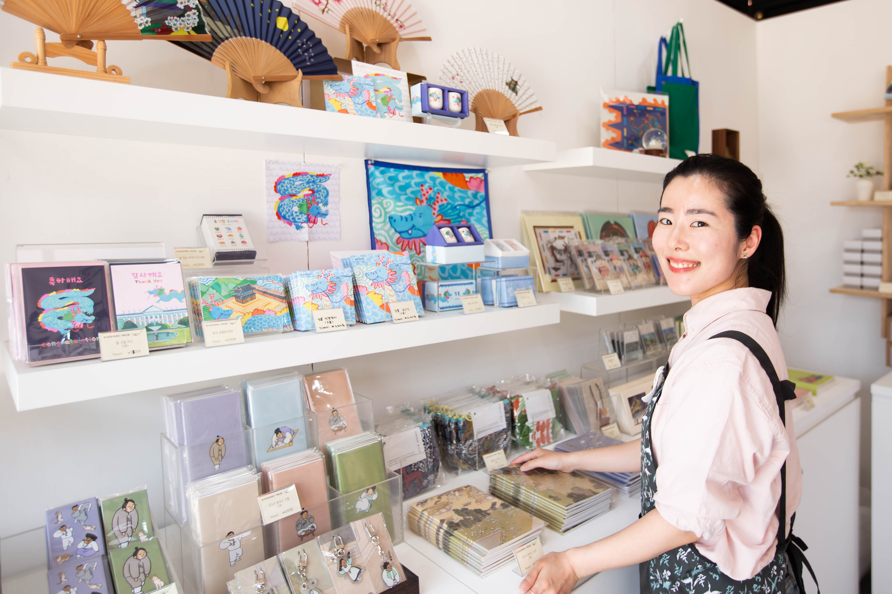
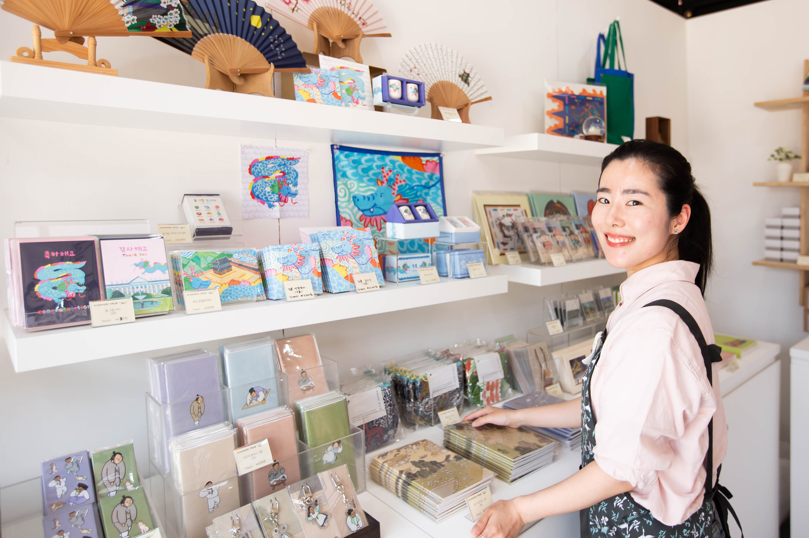

보도자료
작성자 : 궁중문화축전관리자
2024-05-04
국가무형유산의 작품부터 전통 문화상품 전통 먹거리까지
 

박해일 참여 전시 오디오 가이드,
궁능TV 유튜브 공개/ 4.25.(목) 오후 7시
문화재청 궁능유적본부(본부장 직무대리 송인헌)와 한국문화재재단(이사장 최영창)이 ‘궁중문화축전’ 프로그램으로 올해 처음 선보인 ‘케이헤리티지(K-Heritage)마켓’ 이 관람객들의 큰 호응을 얻고 있다. ‘케이헤리티지 마켓’은 ‘궁중문화축전’이 진행되는 5월 5일까지 매일 오전 10시부터 오후 5시까지 경복궁 흥례문 광장에서 열린다.
* 5월 5일(일)은 오후 3시까지 운영올해 10주년을 맞이하는 ‘궁중문화축전’은 서울의 5대 고궁(경복궁·창덕궁·덕수궁·창경궁·경희궁)과 종묘 일대에서 다채로운 전통문화 프로그램을 펼치는 국내 최대 문화유산 축제이다. 마켓이 열린 지난 주말에는 많은 관람객들이 방문하며 축제의 분위기를 더하고 있다. 특히, 행사장을 방문한 관람객의 절반 이상이 외국인 관광객을 차지하는 등 큰 호응을 얻고 있다.
무형유산 작품과 전통 공예품, 전통 먹거리를 모두 한자리에
궁중문화축전의 프로그램 중 하나인 ‘케이헤리티지 마켓’은 공예분야 국가무형유산의 작품과 공예업체의 전통 공예품의 판매 활성화를 위해 첫 선을 보이는 행사이다. 궁중문화축전을 찾은 관람객들은 국가무형유산의 작품을 관람하며, 각종 체험 프로그램과 전통다과에 이르기까지 다양한 전통문화를 경험하고 즐길 수 있다. 각각의 홍보관에서 진행되는 체험은 상설로 진행되어, 별도의 예약 없이 참여 가능하다.
이번 ‘케이헤리티지 마켓’에 참여한 국가무형유산 전승자들은 김창대 제와장 보유자, 정영락 옹기장 이수자, 이지호 유기장 이수자, 이재웅 소목장 이수자, 이태발 소목장 이수자, 황덕성 화혜장 이수자, 윤정숙 자수장 이수자, 양선희 단청장 전승교육사 등이다. 일상생활에 사용 가능한 상품들을 선보여 관람객들에게 좋은 반응을 얻고 있다.
이와 함께, 공예품과 문화상품을 판매하는 ‘대림목공예’, ‘루월’, ‘은조맨션’, ‘핸드플러스’, ‘고고공방’, ‘쏘아’, ‘빛봄’, ‘플레이모빌’ 등도 참여하여 소상공인 및 기업들과 상생하는 자리를 만들었다.
국가유산 관련 기관이 참여하는 이벤트도 풍성하게 열려
‘케이헤리티지마켓’에는 국가유산과 관련된 기관들도 참여하여 관람객들에게 국가유산과 관련한 다양한 체험 프로그램과 이벤트를 제공하고 있다.
국가유산기본법 시행에 따라 오는 5월 17일 문화재청은 국가유산청으로, 한국문화재재단은 국가유산진흥원으로 새롭게 출범한다. 이를 알리는 홍보관이 마련되어 국민들에게 새롭게 바뀌는 국가유산 체계를 홍보한다.
‘국가유산청’ 홍보관에서는 국가유산청의 비전과 정책방향을 소개하고 국가유산 체계의 변경에 대한 상세한 안내를 제공하고 있다.
‘국가유산진흥원’ 홍보관에서는 국가유산진흥원 출범을 알리는 기관 소개와 포토존을 구성하여 부스를 꾸미고, 인스타그램 팔로우 이벤트와 병행한 경품 뽑기 이벤트, 배지 만들기 체험, 사진인화 이벤트 등 다양한 이벤트를 진행 중이다.
‘국가유산 방문캠페인’ 홍보관에서는 국가유산 드로잉존, 메타버스존, 퀴즈존 등을 운영하며 국가유산을 색다르고 재미있는 방식으로 알린다. 또한, 한정판으로 제작된 ‘국가유산 방문자 여권' 6,000부를 배포하고 있다.
이 외에도, 국비지원 발굴조사단, 찾아가는 국가유산디지털체험관 ‘이어지교’, 한국전통문화대학교 전통문화상품개발실, 서울페스타 2024 등이 함께 하고 있다.
‘케이헤리티지 마켓’은 ‘2024 봄 궁중문화축전’이 열리는 5월 5일까지 경복궁 흥례문 광장에서 열린다. ‘케이헤리티지 마켓’에 관한 자세한 정보는 궁중문화축전 누리집(www.chf.or.kr/fest)을 참조하면 된다.